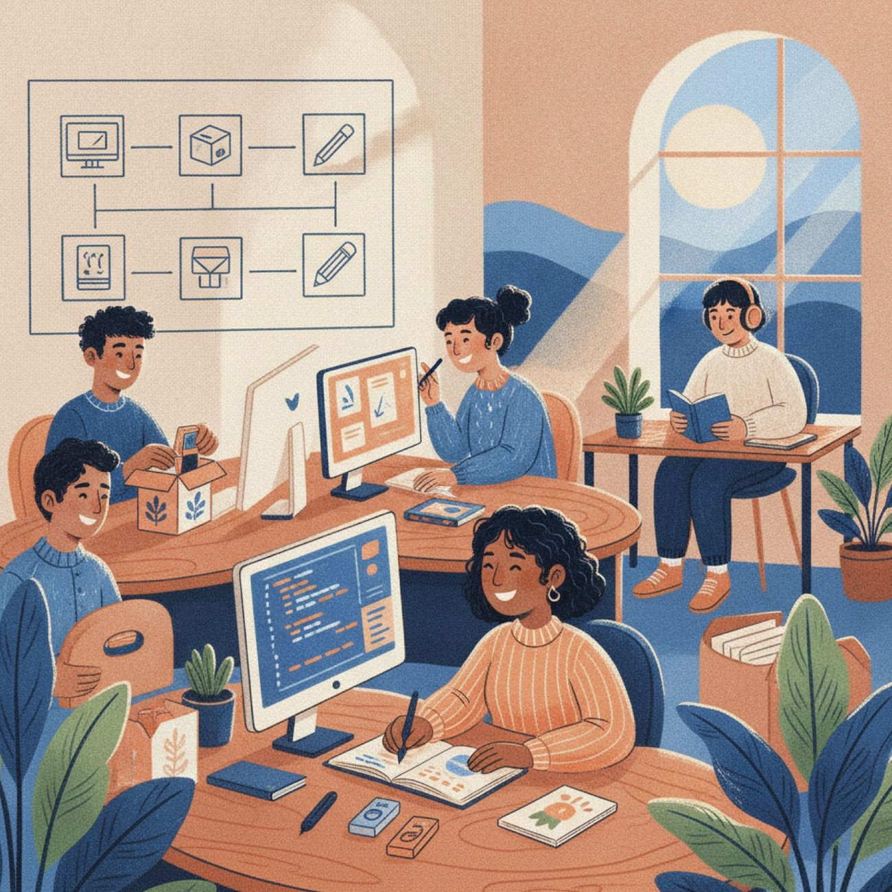
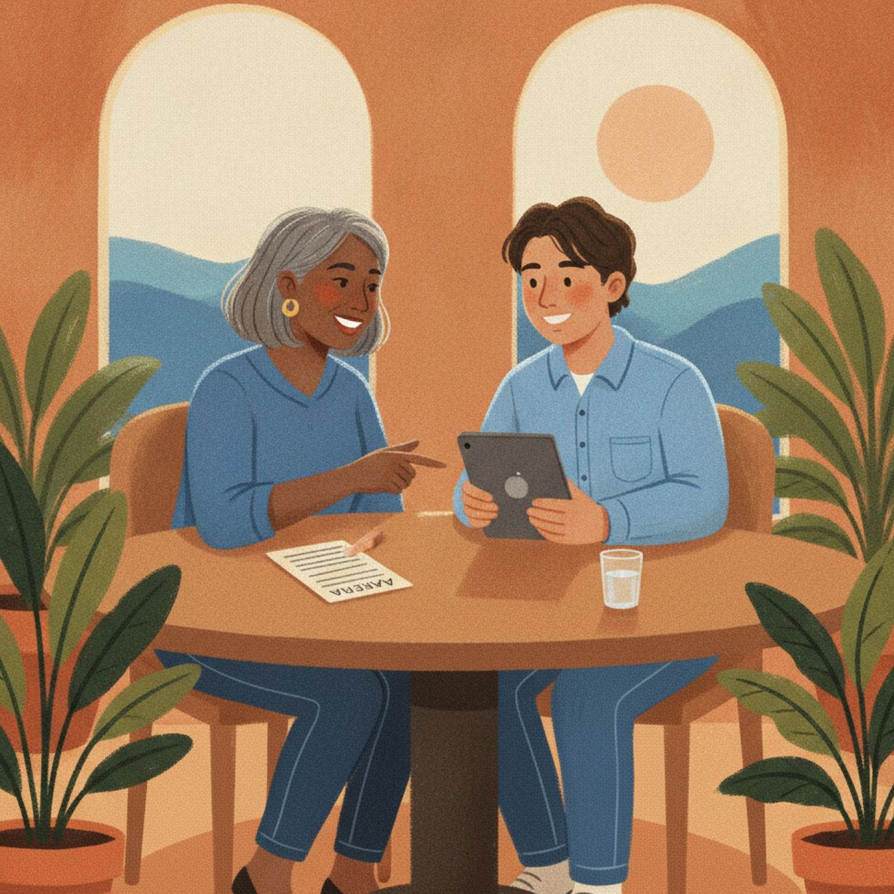

让每位求职者都能展示真实能力Helping every job seeker show what they can really do
清楚的岗位说明、可预期的流程和合理便利，能让更多自闭症求职者展示真实能力。Clear job descriptions, a predictable process and reasonable accommodations let more autistic job seekers show what they can do.

包容性招聘从减少不必要的模糊和意外开始。Inclusive hiring starts by removing unnecessary ambiguity and surprises.

关于合理便利About accommodations
便利需按个人和岗位决定。本项目不作法律判断，请参考美国劳工部和JAN。Decided case by case. We don't give legal judgements — see the U.S. Department of Labor and JAN.
写清楚职责和技能Describe the actual job
写具体职责和技能，删去无关的性格描述。Concrete duties and skills; no irrelevant personality traits.
提前说明面试安排Explain the interview in advance
形式、地点、参与人员和时长。Format, place, who's there and how long.
提供其他评估方式Offer other ways to show skills
允许书面回答或现场展示技能。Allow written answers or hands-on skill demonstrations.
书面指令与固定反馈Written instructions, regular feedback
清楚的优先级和固定反馈时间。Clear priorities and a regular feedback schedule.
说明便利申请渠道Make accommodations easy to request
公开申请渠道，保护隐私。A clear channel, with privacy protected.
没有这七项，我们不会发布岗位Without these seven details, we won't post a role
- 雇主法定名称和官方网站The employer's legal name and official website
- 岗位名称、主要职责和必要技能Job title, main duties and required skills
- 地点、远程或现场安排、工作时间Location, remote or on-site arrangement, and working hours
- 薪酬或明确标注为无薪志愿岗位Pay — or a clear label that it's an unpaid volunteer role
- 申请截止日期和正式申请链接Application deadline and the official application link
- 合理便利或招聘支持联系渠道A contact for accommodations or hiring support
- 项目是否收取费用或推荐佣金Whether the project charges any fee or referral commission
展示岗位不保证录用、工作条件或雇主行为。发布前我们会核验雇主身份和申请链接。A listing doesn't guarantee hiring, conditions or employer conduct. We verify the employer and application link first.
直接前往官方资源Go straight to the official sources
外部链接不代表这些机构认可本项目。Linking to them doesn't mean they endorse MindBridge.
从校园到职场，从生活技能到成年生活From school to work, from life skills to adult life
提交包容性岗位Submit an inclusive role
按上方七项字段发送岗位信息，核验后展示。Send us the seven details above; we list roles after verification.